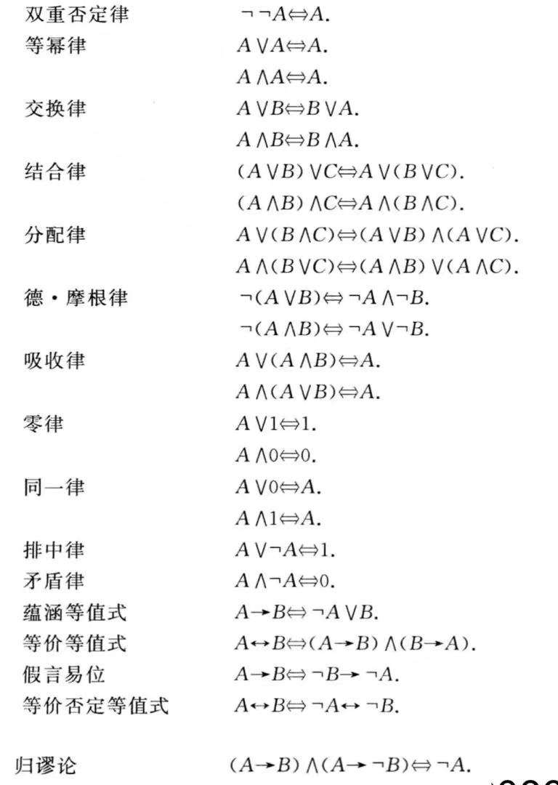

从入门到出门。
第一章 命题逻辑
$\S 1.1$ 命题符号化及联结词
命题以及联结词
命题：能判断真假的陈述句。表示其正确性的值称为真值。
不能分解的更简单的命题称为简单命题或原子命题。
简单命题真值确定，又称为命题常项或命题常元。
真值可变的简单陈述句称为命题变项或命题变元。
复合命题由简单命题与联接词联接而成。联结词也称为真值联结词或逻辑联结词。
复合命题 “非 $p$” 称为 $p$ 的否定式，记作 $\neg p$。$\neg$ 称为否定联结词。
复合命题 “$p$ 并且 $q$” 称为 $p$ 与 $q$ 的合取式，记作 $p \wedge q$。$\wedge$ 称为合取联结词。
复合命题 “$p$ 或 $q$” 称为 $p$ 与 $q$ 的析取式，记作 $p \vee q$。$\vee$ 称为析取联结词。
复合命题 “如果 $p$，则 $q$” 称为 $p$ 与 $q$ 的蕴涵式，记作 $p \to q$。称 $p$ 为蕴涵式的前件，$q$ 为蕴涵式的后件。$\to$ 称为蕴涵联结词。该命题为假当且仅当 $p$ 为真且 $q$为假。
$q$ 是 $p$ 的必要条件，$p$ 是 $q$ 的充分条件。等同于”只要 $p$ 就 $q$”，“$p$ 仅当 $q$”，“只有 $q$ 才 $p$”等。
若两个命题均是否定行为，可以考虑先化作逆否命题形式。
还有一种较为直观判断 $p \to q$ 还是 $q \to p$ 的方法是画维恩图。后件的区域是会包含前件的区域的。

复合命题 “$p$ 当且仅当 $q$” 称为 $p$ 与 $q$ 的等价式，记作 $p \leftrightarrow q$。$\leftrightarrow$ 称为等价联结词。该命题为真当且仅当 $p$ 和 $q$ 均为真或均为假。
命题公式及分类
命题公式定义：
- 单个命题常项 / 变项 / 0 / 1 是命题公式。
- 有限次的联结词与命题公式结合使用也是命题公式。
- 命题公式又称为合式公式，简称公式。
命题公式层次的定义：
- 单个命题是 $0$ 层公式。
- $A$ 是 $n + 1$ 层当且仅当：
- $A = \neg B$， $B$ 是第 $n$ 层。
- $A = B \oplus C$，其中 $B$，$C$ 是第 $i$ ，$j$ 层，且 $n = max(i, j),\oplus =\vee / \wedge / \to / \leftrightarrow$。
对于某一命题公式 $A$，对于其中的命题变项，指定它们的一组真值，称为 $A$ 的一个赋值 / 解释。使 $A$ 真值为真的这组值称为成真赋值，反之称为成假赋值。
特殊的，若 $A$ 在所有赋值下均为真，则称为重言式或永真式；若 $A$ 在所有赋值下均为假，则称为矛盾式或永假式；若 $A$ 在某一赋值下为真，则称为可满足式。
$n$ 元真值函数 $F:\{0, 1\}^n \to \{0, 1\}$，对于 $n$ 个命题变项有 $2^{2^n}$ 个真值函数 。
因为 $n$ 个变量可以形成 $2^n$ 个结果，对于每个结果，又有 $0 / 1$ 的选择，故一共 $2^{2^n}$。

对于 $A$，$B$ 命题，若 $A \leftrightarrow B$ 是重言式，则称 $A$，$B$ 等价，记作$A \Leftrightarrow B$。
注意 $\Leftrightarrow$ 不是联接词。

等值演算：由已知的等值式推演出新的等值式；置换规则：若 $A \Leftrightarrow B$，则 $\Phi(A) \Leftrightarrow \Phi(B)$。
证明两个公式等值时，可以直接用等值演算来验证，而证明公式不等值时，往往要通过赋值来使两边真值不等来验证。
仅由有限个命题变项或其否定构成的析取式称为简单析取式，仅由有限个命题变项或其否定构成的合取式称为简单合取式。
由有限个简单析取式合取而成的式子称为合取范式，由有限个简单合取式析取而成的式子称为析取范式。析取范式和合取范式总称为范式。
单个命题变项或其否定既是简单析取式又是简单合取式。
任一命题公式都有与之等值的析取范式和合取范式，且不唯一存在。
极小项：在含有若干命题变项的简单合取式中，每个命题变项及其否定有且仅有一个出现一次，这样的简单合取式称为极小项。 极大项：在含有若干命题变项的简单析取式中，每个命题变项及其否定有且仅有一个出现一次，这样的简单析取式称为极小项。
$n$ 个命题变项产生 $2^n$ 个极小（大）项。
用 $m_i(M_i)$ 表示第 $i$ 个极小（大）项，$i$ 是该极小（大）项成真（假）赋值的十进制表示。
$\neg m_I \Leftrightarrow M_i$，$\neg M_i \Leftrightarrow m_i$。
主析取范式：由极小项组成的析取范式，主合取范式：由极大项合取组成的合取范式。
任何命题公式都有与之等值的主析取范式和主合取范式，并且是唯一的。
利用公式的主析（合）取范式可以快速成真（假）赋值。
判断公式类型（重要推论）：
设 $A$ 有 $n$ 个命题变项，则$A$ 为重言式 $\Leftrightarrow$ $A$ 的主析取范式含 $2^n$ 个极小项。
$\Leftrightarrow$ $A$ 的主合取范式为 $1$。
$A$ 为矛盾式 $\Leftrightarrow$ $A$ 的主析取范式为 $0$。
$\Leftrightarrow$ $A$ 的主合取范式含 $2^n$ 个极大项。
$A$ 为非重言式的可满足式 $\Leftrightarrow$ $A$ 的主析取范式中至少含一个且不含全部极小项。
$\Leftrightarrow$ $A$ 的主合取范式中至少含一个且不含全部极大项。
当 $A$ 的主析取范式含 $2^n$ 个极小项时，说明有 $2^n$ 个成真赋值，也就是说无论怎么赋值结果都是 $1$。
当 $A$ 的主合取范式含 $2^n$ 个极大项时，说明有 $2^n$ 个成假赋值，也就是说无论怎么赋值结果都是 $0$。